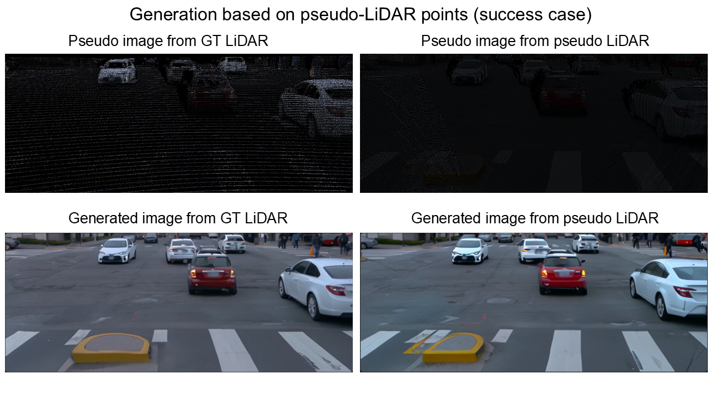
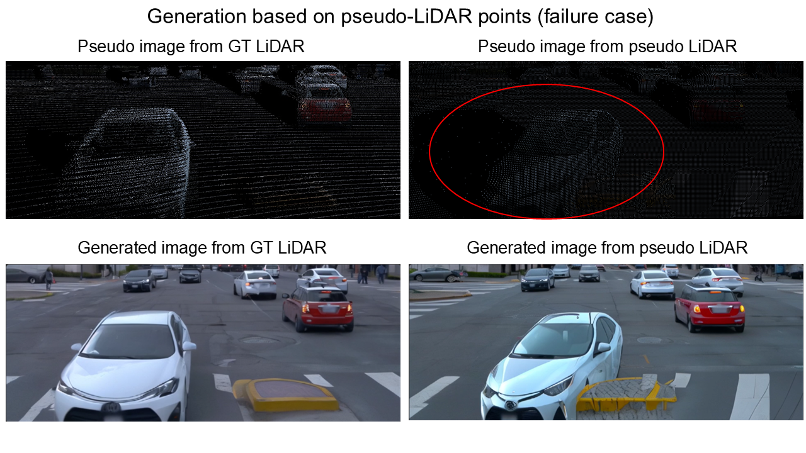

FreeVS: Generative View Synthesis on Free Driving Trajectory
Sucess and Failure Cases of Generation with Pseudo LiDAR Points


Video Demos of Generation With Pseudo LiDAR Points
Ground Truth Video
Video Generated with GT LiDAR Points
Video Generated with Pseudo LiDAR Points